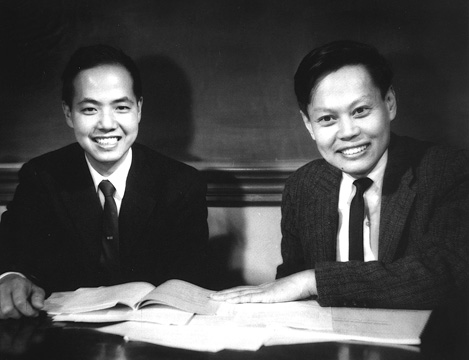
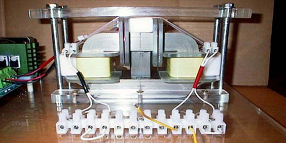

|
Portent of the Apparent Steorn
Discovery of a Working Asymmetric Maxwellian System with COP>1.0
“The Irish group Steorn (Sean
McCarthy is CEO and head of it) appears to have stumbled into building an
asymmetrical permanent magnet rotator
– which is one of the huge class (asymmetrical systems) of Maxwellian
systems that Lorentz
arbitrarily discarded more than a century ago. The scientific community
still symmetrizes the Heaviside equations
and thus still arbitrarily discards all those asymmetrical Maxwellian
systems today, in every university EE department and text.” (Clean
Electrical Energy From The Active Vacuum )
“In an interview Sean [McCarthy,
CEO of Steorn], described the unit’s operation
this way: "What we have
developed is a way to construct magnetic fields so that
when you travel round the magnetic fields, starting and stopping
at the same position, you have
gained energy."
Rigorously that
fits a description of a magnetic rotary device where the field
interactions are asymmetric, right from the source magnets. And that
is a type of Maxwellian system that
can and does exist in nature,
but that Lorentz arbitrarily
discarded in 1892, just to get simpler equations
easier to solve algebraically. Steorn is making three (3) claims for its patent-pending
technology as follows:
"1. The technology has a
coefficient of performance greater
than 100%.
2. The operation
of the technology (i.e. the creation
of energy) is not derived from the : degradation
of its component parts.
3. There is no identifiable
environmental source of the energy (as might be witnessed by a cooling of
ambient air temperature).
The sum of these claims is that
our technology creates free
energy.”
It would be preferable that the
latter statement
had been “the sum of these claims is that
our technology produces free energy from a previously undetermined
environmental source."
Meanwhile, for awhile now we have
also been urging several inventors and groups, highly skilled in nonlinear
magnetics, to develop little “rotary toy” kits of nonlinear magnetic
assemblies with just such overall asymmetry in the line integration
of F dot ds around the closed loop taken by the rotor. The condition for
overall rotary asymmetry is that
the line integral of F dot ds around the circular path
does not equal zero, but is greater
than zero. That’s exactly what
McCarthy in
Ireland (with that
Steorn unit) describes. And that
“nonzero line integral condition” type of system is exactly what
Lorentz discarded way back in 1892, and what
our EE departments still arbitrarily discard from electrical engineering.
Another way to put it is that,
in a symmetrical permanent magnet system, the forward mmf is equal and
opposite to the back mmf. So in the forward mmf region, the system
self-accelerates and freely
gives you some power, but in the back mmf region it is self-braking and
freely takes back power. If the two are equal and opposite, then the
device deliberately takes back
as much as it gives, and it cannot self-power anything. Specifically, that
and the manner usually used for a rotary closed loop, means that
the system is arbitrarily symmetrized, and the symmetrical fields are
arbitrarily fixed and do not change." (Free
Energy - Regauging)
The self-enforcing symmetry way is precisely the basic way we are taught
to build all our EM systems, so that
we have to put in energy continually, lose some, and get some out to the
load. The only reason we input energy (such as cranking the shaft of a
generator) is to forcibly break
symmetry by forcibly producing an internal dipolarity in the generator.
Then the proven asymmetry of a dipolarity (separated
opposite charges) will absorb ordered virtual photons (and their virtual
energy) from the vacuum and coherently integrate
it into observable real EM photon energy, and thus emit real observable
photons continually without any observable energy input. When there is a
broken symmetry, then “something virtual has become observable”, according
to Nobelist Lee.

Nobel Prize Winners T.D. Lee and C.K. Yang
© From the private collection of Professor
Yang
The two scientists Lee and Yang, of course, predicted
broken symmetry in physics back in the early 50s (particularly 1956 and
early 57). So startling was this proposed giant revolution in physics --
if real -- that experimenters
promptly proved it (Wu and her colleagues proved it experimentally in Feb.
1957). Again, this was such a giant revolution in physics that
with unprecedented speed the Nobel Committee then awarded the Nobel Prize
to Lee and Yang, in Dec. 1957. And since then, the implications
of that vast revolution in all
of physics has not even made it across the campus from the physics
department to the electrical engineering department. (Nobel
Prize Awarded To Lee and Yang
[1]
[2])
It reminds me of the invention of
amorphous semiconductors by Ovshinsky. “Everybody knew” that
a semiconductor had to have a crystalline structure, and – so they said –
Ovshinsky was either a fool or a charlatan.
They called him every name in the book, etc. But he persisted, and finally
a Japanese company funded the effort. Then one day our beloved scientific
community awoke to find that
all the Xerox machines had Ovshinsky amorphous semiconductors in them and
those semiconductors were working just fine. Bummer! No one ever
apologized to Ovshinsky (who is doing well and still has his website, his
company, and good success, etc.). But gradually the youngsters did
doctoral theses on amorphous semiconductors and post docs got amorphous
semiconductor programs funded to do work in. So that’s
how our scientific community “discovered” and gradually adopted amorphous
semiconductors. (The
Amorphous Semiconductor; Stanford Ovshinsky)
As Max Planck once said,
"An important scientific innovation
rarely makes its way by gradually winning over and converting its
opponents: it rarely happens that
Saul becomes Paul. What does
happen is that its opponents
gradually die out, and that the
growing generation is
familiarized with the ideas from the beginning." (Max Planck, as quoted in
G. Holton, Thematic Origins of
Scientific Thought, Harvard University Press, Cambridge, MA, 1973.[(Wikipedia)])
Energy from the vacuum is another
such area. It firmly exists in modern particle physics, and just as firmly
is excluded from the old CEM/EE model and thus from all electrical power
engineering. (The
Energetic Vacuum by Hal
Puthoff; and
A Commentary On Vacuum Energy
by Mark A. Solis.)
As Davies points out:
"What
might appear to be empty space is, therefore, a seething ferment of
virtual particles. A vacuum is not inert and featureless,
but alive with throbbing energy and vitality. A 'real' particle such as an
electron must always be viewed against this background of frenetic
activity. When an electron moves through space, it is actually swimming in
a sea of ghost particles of all varieties – virtual leptons, quarks, and
messengers, entangled in a complex mêlée. The presence of the electron
will distort this irreducible vacuum activity, and the distortion in turn
reacts back on the electron. Even
at rest, an electron is not
at rest: it is being
continually assaulted by all manner of other particles from the vacuum."
(Paul Davies, Superforce: The Search for a Grand Unified Theory of Nature,
Simon and Schuster, New York, 1984, p. 105).
McCarthy and Steorn apparently do not realize that
(1) a magnetic pole is actually a magnetic charge, and separated
opposite poles are separated
opposite magnetic charges (a magnetic dipole), (2) the proven Lee-Yang
broken symmetry of any magnetic dipole continually absorbs ordered virtual
energy (ordered individual virtual photons) from the seething interactive
vacuum, integrates this ordered
virtual energy coherently into quantum energy, and re-emits real
observable photons in all directions in a steady stream. That
follows from solving the “source charge problem” of how any and every static
charge just sits there and continues to pour out real observable EM energy
(it’s quite measurable!) but without any observable energy input (i.e.,
the input energy is there and nonobservable, hence virtual, else every
charge creates energy from
nothing and experimentally demolishes the entire energy conservation
law – and therefore demolishes most of present physics and
thermodynamics).
Any “isolated”
charge polarizes its surrounding vacuum, and hence is part of a dipolar
ensemble. In modern physics, this ensemble (even of a single electron)
involves two infinite energy charges, each having infinite energy, but the
difference between the two infinite entities is finite. Quoting Nobelist
Weinberg:
"[The total energy of the
atom] depends on the bare mass
and bare charge of the electron, the mass and charge that
appear in the equations of the
theory before we start worrying about photon emissions and reabsorptions.
But free electrons as well as electrons in
atoms are always emitting and
reabsorbing photons that affect
the electron's mass and electric charge, and so the bare mass and charge
are not the same as the measured electron mass and charge that
are listed in tables of elementary particles. In fact, in order to account
for the observed values (which of course are finite) of the mass and
charge of the electron, the bare mass and charge must themselves be
infinite. The total energy of the
atom is thus the sum of two
terms, both infinite: the bare energy that
is infinite because it depends on the infinite bare mass and charge, and
the energy shift … that is
infinite because it receives contributions from virtual photons of
unlimited energy." [Steven Weinberg,
Dreams of a Final Theory, Vintage Books, Random House, 1993, p. 109-110.].
When it appears in the seething vacuum, and while it fleetingly exists, a
virtual particle (such as a virtual photon) is totally ordered. Although
the entire virtual state vacuum
or a large region of it statistically
is disordered, each individual temporary virtual particle is totally
ordered while it fleetingly exists.
So each observable source charge
and dipole continually absorbs ordered virtual photons and their energy,
and thus acts as a true Maxwell’s demon (absorbing only ordered virtual
particles out of a statistically
disordered ensemble medium – the virtual state
vacuum with its virtual state
energy fluctuations) and also
acts as a true Feynman’s ratchet
(continually integrating and “ratcheting
up” real observable energy from those serially absorbed but ordered
virtual photons it absorbs).
Note that
standard electrical engineering assumes that
all EM fields and potentials are produced by their source charges, but
also assumes that these fields
and potentials and their energy are freely created
from nothing
at all. That’s
because CEM/EE does not account for the active vacuum, or for any
interaction of charge and vacuum. Thus it does not account for the
continual absorption of ordered virtual photons by a source charge. But
instead of the assumed “creation
of EM energy out of nothing
at all”, all EM fields and
potentials and their observable EM energy are freely produced from the
seething vacuum energy interaction by a combination
action of a Maxwell’s demon and a Feynman ratchet,
continually applied by those source charges.
The source charge may be said to
consume positive entropy of the statistical
virtual state vacuum, and
produce negative entropy in the
observable state, in violation
of the old second law of equilibrium thermodynamics. Not to worry, the
source charge or source dipole is actually a system far from equilibrium,
and it is in a steady state that
way. So it is a
NESS (nonequilibrium steady state)
system. In modern far-from-equilibrium thermodynamics, such a system is
permitted to do five magic functions that
are impossible in equilibrium thermodynamics. The NESS system can
permissibly (1) self-order (closely associated
with negative entropy), (2)
self-oscillate or self-rotate,
(3) output more useful energy than the operator
pays to input (the excess energy is freely input and received from the
active local environment, in this case the active vacuum), (4) power
itself and its load simultaneously (all the energy input is freely
received from the active local environment, in this case the active
vacuum), and (5) produce negative
entropy (closely related to
self-ordering).
We point out that
violation of the old second law
of equilibrium thermodynamics is simple and easy, particularly for
smallest pieces of any macrosystem.
Quoting Maxwell (who was also a
thermodynamicist):
"The truth of the second law is …
a statistical, not a mathematical,
truth, for it depends on the fact that
the bodies we deal with consist of millions of molecules… Hence the second
law of thermodynamics is continually being violated,
and that to a considerable
extent, in any sufficiently small group of molecules belonging to a real
body." (J. C. Maxwell, “Tait's Thermodynamics II,”
Nature
17, 278–280 [7 February 1878]).
Just compare Maxwell’s statement
to the temporary existence of each ordered virtual particle in the statistically
disordered ensemble. The appearance of each ordered virtual particle is
actually the bubbling up (production) of a local negative
entropy occurrence, so that the
observable charge’s absorption of that
temporarily ordered particle is an absorption of completely ordered
energy.
In non-equilibrium thermodynamics,
it is well-known and recognized that
the second law can be violated,
even by simple strong gradients. E.g., a listing of several areas known to
allow violation of the second
law, is given by Dilip Kondepudi and Ilya Prigogine, in
Modern Thermodynamics: From Heat
Engines to Dissipative
Structures. (Wiley, New York, 1998, reprinted with corrections
1999, p. 459.)
Apparently Sean McCarthy (Steorn)
and his team have possessed (since 2003 or thereabouts) a tried and very
well-tested example of one of those asymmetric Maxwellian systems that
were all arbitrarily discarded by Lorentz in 1892, when he arbitrarily
symmetrized the Heaviside equations.
That symmetrized version of
Heaviside’s already serious curtailment of Maxwell’s theory, is still
taught to all our EEs as “Maxwell’s theory”, which it is most certainly
not. And it still uses symmetrized equations,
so that it still arbitrarily
discards all asymmetrical Maxwellian systems.
So we must get that
inane old symmetrized EE model changed and corrected in our universities,
get back to a higher group symmetry algebra besides vectors and tensors,
and get back to a much fuller EM theory that
recovers those long-discarded asymmetric Maxwellian systems. Those
asymmetric Maxwellian systems will easily and cheaply power the world, if
we can just get the scientific community to get out of its present ostrich
position with its head buried firmly in the sand insofar as broken Lorentz
symmetry in CEM/EE systems is concerned.
E.g., proof that
a real physical system can theoretically produce continuous negative
entropy, thus continually violating
that old second law, is given
by D. J. Evans and Lamberto Rondoni, in "Comments on the Entropy of
Nonequilibrium Steady States,"
(J. Stat.
Phys. 109(3-4), Nov. 2002, p. 895-920). Further, this can and
does occur in real systems, as has been experimentally proven. E.g., see
G. M. Wang, E. M. Sevick, Emil Mittag, Debra J. Searles, and Denis J.
Evans, "Experimental Demonstration
of Violations of the Second Law
of Thermodynamics for Small Systems and Short Time Scales,"
Phys. Rev. Lett., 89(5), 29
July 2002, 050601. The authors experimentally demonstrate
the integrated transient fluctuation
theorem, which predicts appreciable and measurable violations
of the second law of thermodynamics for small systems over short time
scales. Entropy consumption is shown to occur over colloidal length and
time scales, for up to two seconds and
at micron size scales. Again
recall Maxwell’s 1878 statement
about the old second law. One can indeed separate
and collect those separate
particles in their “negative
entropy” excursions, and get useful work and effects out of it.
In the hard physics literature,
rigorous proof that eliminating
the arbitrary Lorentz condition provides systems having free additional EM
energy currents received from the vacuum is given by M. W. Evans et al.
(“Classical Electrodynamics without the Lorentz Condition: Extracting
Energy from the Vacuum,” Physica Scripta, Vol. 61, 2000, p. 513-517.)
Evans also makes it very clear,
when one “looks” through the eyes of a more advanced EM model than U(1).
Quoting Evans, speaking from O(3) electrodynamics:
"…the acceptance of a structured
vacuum described by an O(3) gauge group leads directly to the existence of
novel charges and currents in the vacuum. These are conserved, or Noether,
currents and charges and are clearly topological in origin. They spring
from the fact that the vacuum
is a topological space. Four such entities emerge: [1] A topological
vacuum electric charge, also proposed empirically by Lehnert et al. [2] A
topological vacuum electric current, also proposed empirically by Lehnert
et al. [3] A topological vacuum magnetic charge, proposed also by Barrett
and Harmuth.[4] A vacuum topological magnetic current, proposed also by
Barrett and Harmuth.
"Each of these four objects can
provide energy, which can be loosely termed 'vacuum energy': energy coming
from the topology of the vacuum." (Myron W. Evans, "O(3) Electrodynamics,"
in Modern Nonlinear Optics, Second Edition, 3 Vols., edited by M.W.
Evans, Wiley, New York, 2001, Part 1, p. 84.)
Note also that our universities
do not even teach students the assumptions (axioms) that
are incorporated in the old
Heaviside-Lorentz model, which is presently being erroneously taught as
“Maxwell’s theory”. I could not find a single CEM/EE text that
just methodically listed these assumptions incorporated
in the model. Eminent scientists (such as Feynman, Wheeler, Margenau, and
many others) have pointed out that
many of those CEM/EE foundations
assumptions have long been falsified by physics, since that
sad old model was glued together in the 1880s and 1890s, after Maxwell was
already dead (he died in 1879 of stomach cancer).
So I gathered
together a listing and discussion of the proposed major falsities in the
present electrical engineering model, so that
the grad students and young post docs would have it and thus know those
falsities. My paper, “Errors and Omissions in the CEM/EE Model,” is freely
available for downloading on my
website. This paper also shows a magnetic Wankel engine (suppressed from
the world market) that can be
built by any electrical engineering department or physics department, and
tested
at COP>1.0 to one’s heart’s
content. The system is also easily close-looped for self-powering – fuel
free, continuous use of the energy from the vacuum,
at will.
The
National
Science Foundation
reviewed that paper in 2005,
and it passed their review. See the
National
Science Foundation
Letter confirming successful review of the “Errors and Omissions…” paper.
But it appears that
no part of our scientific leadership is going to fund the correction of that
terribly flawed old CEM/EE model, which has become so dogmatically
entrenched that it has become
almost a religion. The scientific leadership is also not going to fund
research in asymmetric Maxwellian systems that
goes back and restores the asymmetry to the theoretical model, and then
explores the kinds of asymmetric Maxwellian systems that
emerge from their long hibernation.
Every EM system actually engineers its local vacuum, changing the ongoing
interaction between vacuum and charge in the system. E.g., a magnetic pole
is actually magnetic charge, and so permanent magnets also have engineered
the local vacuum to produce their so-called “static”
fields from virtual state
energy continually received from the seething vacuum. Indeed, any charge
(or pole) continually emits real observable photons, but no instrument can
measure any observable energy input. That
is because the energy exchange from the vacuum to the charge (pole) is in
the virtual state, and so the
source charge (or pole) continually absorbs ordered virtual photons from
the vacuum exchange, coherently integrates
it to the next quantal level of excitation,
then abruptly decays to emit a real, observable photon. The process is
continual and iterative, and so
this is the solution to the long-vexing “source charge problem” that
has been swept out of the literature.
It is also how the source charge produces its fields and potentials,
spreading
at the speed of light from the
moment of appearance of the source charge itself. The process by which the
source charge (or pole) creates
its “static” fields, is totally
dynamic. To understand asymmetrical Maxwellian systems, we must understand
how all “static” fields are
actually steady state dynamic
systems. We must revise our very notion of the “static”
field, to be in compliance with Van Flandern’s beautiful waterfall
analogy. Quoting Van Flandern on the question of a static
field actually being made of finer parts in continuous motion:
“To retain causality, we must
distinguish two distinct meanings of the term ‘static’.
One meaning is unchanging in the sense of no moving parts. The other
meaning is sameness from moment to moment by continual replacement of all
moving parts. We can visualize this difference by thinking of a waterfall.
A frozen waterfall is static
in the first sense, and a flowing waterfall
is static in the second sense.
Both are essentially the same
at every moment, yet the latter
has moving parts capable of transferring momentum, and is made of entities
that propagate.
…So are … fields for a rigid, stationary
source frozen, or are they continually regenerated?
Causality seems to require the latter.”
(Tom Van Flandern, “The speed of gravity – What
the experiments say,” Physics Letters
A, Vol. 250, Dec. 21, 1998, p. 8-9.)
Even in classical EM theory, in Poynting theory the puzzle of the
macroscopically “static” fields
somehow being dynamic and involving flows of smaller components has been
noted. E.g., quoting Buchwald:
"[Poynting's result] implies that
a charged capacitor in a constant magnetic field which is not parallel to
the electric field is the seat
of energy flows even though all macroscopic phenomena are static."
(Jed Z. Buchwald, From Maxwell to Microphysics, University of
Chicago Press, Chicago and London, 1985, p. 44.)
Presently I’m working on a paper
to retranslate many of the
concepts and operations
presented in the 1880s and 1890s electrical engineering model into the
actual vacuum engineering operations
they are known to be today. That
will still take a bit of time, but we are getting there.
In modern physics, one simply
cannot separate the charge from
its ongoing active exchange with the vacuum. That
is particularly true for asymmetrical Maxwellian systems. E.g., quoting
Aitchison:
"...the concept of a 'single
particle' actually breaks down in relativistic
quantum field theory with interactions, because the interactions between
'the particle' and the vacuum fluctuations
(or virtual quanta) cannot be ignored." (I. J. R. Aitchison, "Nothing's
Plenty: The Vacuum in Modern Quantum Field Theory,"
Contemporary Physics, 26(4),
1985, p. 357.)
And as Wheeler pointed out:
"…curved empty space is a dynamic
entity, as competent to store and carry energy as are ordinary elastic materials
and electromagnetic waves." (John A. Wheeler
and Seymour Tilson, "The Dynamics of Space-Time,"
International
Science and Technology, Dec. 1963, p. 62.)
This continuous interaction between the energetic vacuum and the charges
(and poles) in a Maxwellian system is totally missing from the archaic
1880s CEM/EE model. We will be retranslating
some substantial parts of the old model’s concepts into the more modern
language of vacuum-charge exchange. An initial start has been done with
our own MEG’s operation, in the
Aharonov-Bohm paper cited below.

The Motionless Electromagnetic Generator (MEG)
© Cheniere Press
As a first preliminary example, a
paper giving the detailed operation
of our
MEG, and showing exactly how it first excites its surrounding vacuum
and then stimulates the excited
vacuum to generate free E-field
energy pulses that come back
into the MEG from its surrounding space, is “Engineering
the Active Vacuum: On the Asymmetrical Aharonov-Bohm Effect and Magnetic
Vector Potential A vs. Magnetic Field B .
This paper also contains a drawing showing exactly how a standard generator-powered
circuit is actually powered by energy extracted directly from the vacuum.
It is not powered by the mechanical energy of cranking the shaft of the
generator. All that
cranking the generator shaft
does, is produce the rotating
magnetic field energy inside the generator,
which in turn is dissipated
internally to force opposite charges inside the generator
in opposite directions, thus forcibly forming the internal dipole. (
The Motionless Electromagnetic Generator (Status, Operation, Etc.)
Once that dipole is forcibly
made, its broken symmetry then continually absorbs virtual state
vacuum energy, coherently integrates
it to quantal energy, and thus continually and steadily emits real photons
that establish and continually
replenish the associated fields
and potentials and their energy, spreading
at light speed from the moment
of formation of the dipole.
However, the inane symmetrical
circuit uses half its freely collected external potential energy to
forcibly pump the spent current electrons back through the back emf inside
the generator, thereby scattering
the dipole charges and destroying the generator’s
dipolarity – and shutting down the flow of energy from the vacuum. It
shuts down the flow of energy (destroys the dipolarity) faster than it
powers its loads, so it guarantees COP<1.0. Thus we continually have to
keep cranking the shaft of the generator,
to keep remaking the dipole, that
the inane symmetrical circuit keeps destroying faster than it powers its
loads.
Tom Bearden |